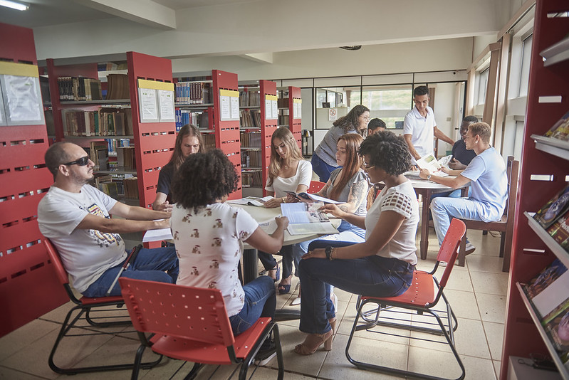
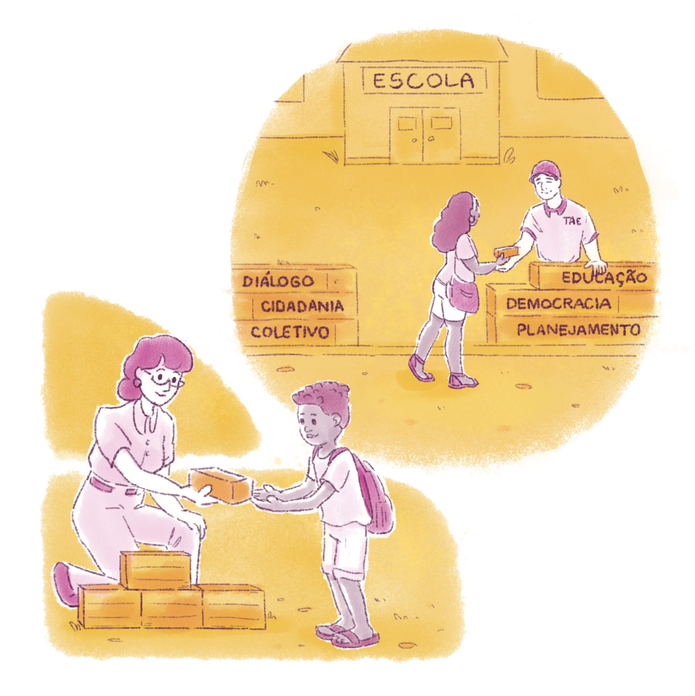
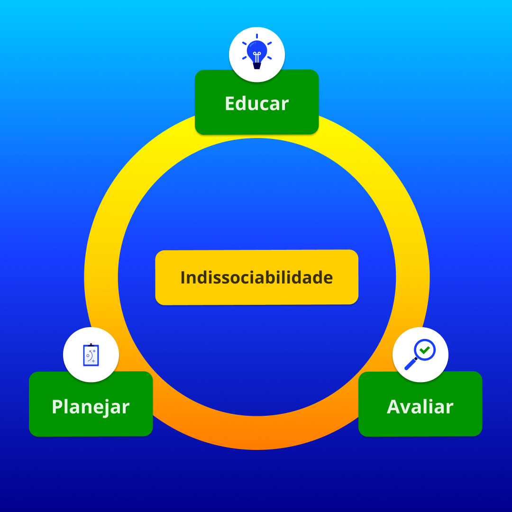

Avaliação Institucional Participativa
Os sistemas de ensino e as instituições escolares já possuem instâncias colegiadas formalmente constituídas, como os Conselhos de Escola (CE) e a Comissão Própria de Avaliação (CPA) nas Instituições de Ensino Superior (IES). Porém, segundo Maria Regina Lemes de Sordi, Regiane Helena Bertagna e Margarida Montejano da Silva (2016), é necessário discutir o planejamento participativo com base na escola, tratando-o como instrumental teórico-prático capaz de facilitar a convergência entre o refletir e o agir. Esse planejamento é uma ferramenta capaz de vitalizar experiências educativas e respaldar a construção democrática do Projeto Político-Pedagógico (PPP).
Nessa perspectiva, para as autoras, pensar a prática torna-se ação incondicional. É nesse momento que se produz teoria, ou seja, a prática é um elemento fundante para produção de teorias, o que por sua vez torna-se uma fusão de um bom planejamento e da avaliação do que foi realizado. No processo educacional, nem tudo que é planejado é executado, mas tudo que é realizado exige avaliação para tornar-se planejamento.
O ato de planejar pode ser caracterizado, no espaço escolar, como uma atividade intencional que visa determinar fins e projetar um novo (re)começo.

Título: Planejar e (re)começar
Fonte: Gescom (2024).
Pedro Demo (2001) considera o planejamento também como instrumento participativo de intervenção na realidade. Ele identifica três componentes básicos do planejamento participativo: a) o processo inicial de formação da consciência crítica e autocrítica na comunidade; b) a necessidade de formulação de uma estratégia concreta de enfrentamento dos problemas, com prioridades, caminhos alternativos e propostas de negociação; c) a necessidade de organização como estratégia para os dois passos anteriores, ou seja, organização aliada ao desafio de fazer acontecer.
Essa composição vai ao encontro do entendimento de Angelo Dalmás (1994), que entende que
planejar é transformar a realidade numa direção escolhida; é organizar a própria ação; é implantar um processo de intervenção na realidade; é agir racionalmente; é dar clareza e precisão à própria ação; é explicitar os fundamentos da ação de grupo; é pôr em ação um conjunto de técnicas para racionalizar a ação; é realizar um conjunto de ações para aproximar uma realidade de um ideal; é realizar o que é importante e essencial
Nessa direção, Marcos Masetto (1994) explicita que o planejamento torna presentes e explícitos os valores, as crenças e as concepções de ser humano, de educação, de mundo e de sociedade, portanto é um ato político-ideológico. É planejando de forma participativa e avaliando coletivamente os processos e projetos que formaremos as gerações para a cidadania e para a democracia participativa. A escola precisa se constituir na máquina da democracia que tanto mobilizou o educador.
A gestão democrática da escola pública básica está prevista na Lei de Diretrizes e Bases da Educação Nacional (LDBEN, Lei nº 9.394/1996). O desafio da participação da comunidade na escola, segundo Vitor Henrique Paro (2012), requer medidas corajosas. O autor destaca a importância de prover condições que permitam que os membros das camadas exploradas participem da vida escolar. Não basta permitir formalmente que os pais de alunos participem da administração da escola, é preciso que haja condições materiais propiciadoras para essa participação.
Os autores Dinorá Zucchetti, Gabriel Grabowski e Joice Maria Lamb (2023) fazem um importante destaque sobre o espaço escolar
neste cruzamento da escola pública com a democracia, há sempre um educador, que se constitui numa afirmação que é também um pressuposto: a educação é uma relação humana, e a escola, um espaço público comum de aprendizagem. Como disse: a escola é, sobretudo, gente. Gente que trabalha, que estuda, que se conhece, se estima. O diretor é gente. O coordenador é gente. O professor é gente. O aluno é gente. Cada funcionário é gente. O importante na escola não é só estudar. É educar-se e ser feliz
 Título: Paulo Freire Fonte: Novo Horizonte de Economia Solidaria (2011). Elaboração: Prosa (2024d).
Título: Paulo Freire Fonte: Novo Horizonte de Economia Solidaria (2011). Elaboração: Prosa (2024d).
Aprender e estudar em comunidade é a melhor forma de promover uma vida em sociedade com uma convivência harmoniosa. Para isso, precisamos de uma educação pública que nos permita ir além do espaço que já habitamos e chegar mais longe. António Nóvoa e Yara Alwin (2021) afirmam que, para levantar esse espaço público comum da educação, são necessários construtores.

Título: A educação é coletividade
Fonte: Prosa (2024e).
Precisamos de professores que assumam plenamente essa missão. São eles que, em proximidade com as famílias, os poderes locais e as entidades públicas e privadas, podem construir as condições para uma capilaridade educativa baseada no bem comum e na convivialidade. Esse espaço público comum só terá sentido no quadro de uma forte participação social, com capacidade de deliberação. Não se trata apenas de consultar, mas de organizar processos de decisão sobre as políticas de educação. Nada se fará sem mudanças de fundo na vida familiar, social e do trabalho. A educação é coletividade.
Toda vez que se propõe uma gestão democrática da escola pública básica que tenha efetiva participação de pais, educadores, alunos e funcionários da escola, isso acaba sendo considerado como proposta utópica. A palavra utopia significa, para uns, o lugar que não existe. Porém, para educadores, a utopia deve ser um ideal e um horizonte a ser perseguido a cada dia e a cada ano. Utopia é nossa forma de esperançar, de agir, de mobilizar-se e de construir a educação que sonhamos. Como disse Freire: a esperança é um imperativo histórico e ontológico de todo ser humano (Freire, 1992).

Título: Educar-Planejar-Avaliar
Fonte: Prosa (2024f).
Educar é uma relação, um processo. Planejar é um processo. Avaliar é um processo. Portanto educar, planejar e avaliar são inseparáveis e indissociáveis. As instituições de ensino, enquanto promotoras do conhecimento, precisam promover mudanças contínuas em prol da sociedade e da comunidade acadêmica, criando uma cultura de planejamento e avaliação institucional que seja formativa, sistemática, contínua, dialógica e democrática.
Nesta perspectiva de formar para a vida, para a cidadania, para inserção no mundo do trabalho e para a democracia por meio da reflexão e de vivências reais, nos diversos sistemas de ensino, nas instituições educacionais e em espaços sociais, destacamos o processo de Constituinte Escolar da Rede Estadual do Estado do Rio Grande do Sul (RS) no período de 1999 a 2002 como um importante processo de planejamento participativo.
Em torno desta experiência participativa, escolhemos três dissertações e um documentário como subsídios complementares para aprofundar seus estudos:
- A dissertação da educadora Josiane Carolina Soares Ramos Amaral, desenvolvida na Faculdade de Educação da Universidade Federal do Rio Grande do Sul (Faced/UFRGS), em 2006: A trajetória da gestão democrática da educação na Rede Estadual de Ensino do Rio Grande do Sul.
- A dissertação da educadora Lucia Camini, também desenvolvida na Faced/UFRGS, em 2005: O processo de construção da política educacional no Rio Grande do Sul de 1999 a 2002: relações, limites, contradições e avanços.
- A dissertação de Taís Schmitz, desenvolvida no Programa de Pós-graduação em Educação na Universidade do Vale do Rio dos Sinos (UNISINOS), em 2007: A constituinte escolar no Rio Grande do Sul como política pública de um governo democrático popular: um estudo sobre o Instituto estadual de educação Professor Pedro Schneider (São Leopoldo).
- O documentário completo Educação Proibida disponível no YouTube gratuitamente.